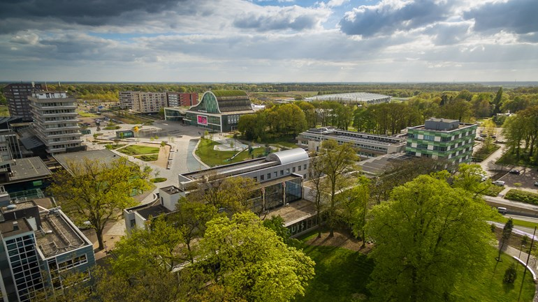
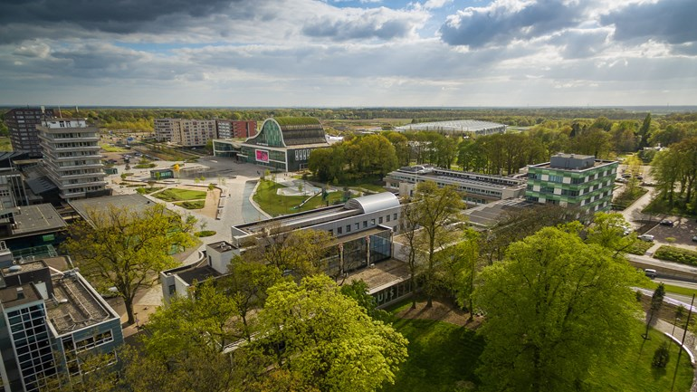

Die Stadt ist ein High-Tech-Zentrum und bietet Studenten und Fachleuten ein anregendes Umfeld. Die Bluetooth-Technologie wurde zum Beispiel in Emmen erfunden.
In Emmen gibt es einige schöne Hotspots, wie zum Beispiel Café de Zwetser und Lounge13. Wenn Sie Kultur mögen, bietet Emmen jede Woche neue Veranstaltungen. Und um fit zu bleiben, können Sie mit dem Sportpass in verschiedenen Sportvereinen und -anlagen trainieren.
In der Stadt Emmen leben rund 56.000 Menschen, während in der gesamten Stadt Emmen 107.000 Menschen leben. Die Stadt selbst ist ein Paradebeispiel für eine geplante Stadt. Sie entstand aus mehreren kleinen Bauern- und Torferntegemeinden, die seit dem Mittelalter die Provinz Drenthe besiedeln.
Die Erweiterung der Stadt erfolgte erst nach dem Zweiten Weltkrieg. Um den alten Stadtkern herum wurden Vorstädte errichtet, beginnend mit dem Emmermeer direkt nördlich und Angelslo im Südosten.
In der Stadt gibt es noch einige historische Sehenswürdigkeiten, darunter die Kirche auf dem Marktplatz, wo sie seit dem Mittelalter steht, das Gerichtsgebäude aus dem Anfang des zwanzigsten Jahrhunderts und das Postamt aus der gleichen zeit.
Emmen verfügt auch über ein fortschrittliches öffentliches Transportsystem mit mehreren Linien, Haltestellen und regelmäßigen Bussen, von denen einige in Städte wie Groningen, Assen und Meppen in Deutschland fahren.
Die berühmteste Attraktion in Emmen ist der Stadtzoo: Wildlands, der in seinem ersten Jahr 1,6 Millionen Besucher anzog. Insgesamt gibt es in Wildlands rund 80 Tierarten mit ausreichend Platz für alle: Der gesamte Zoo ist derzeit 22 Hektar groß und soll in Zukunft auf 45 Hektar erweitert werden. Es wurde am 25. März 2016 eröffnet und ersetzte den vorherigen Zoo.
Es umfasst vier Hauptbereiche:
 


Die Niederlande sind einer der besten Orte zum Leben und Studieren in Europa. Sie bieten einen sehr hohen Lebensstandard und eine qualitativ hochwertige Ausbildung. Die Niederländer sind im Allgemeinen freundlich und einladend.
Die niederländischen Unterrichtsmethoden sind fortgeschritten und innovativ. Zu diesen Methoden gehört das Lernen durch Tun und Arbeiten in Teams. Sie zielen in der Regel darauf ab, Studenten zu Profis in den von ihnen gewählten Bereichen zu verhelfen.
Darüber hinaus werden Abschlüsse von niederländischen Universitäten auf der ganzen Welt anerkannt und begrüßt.
Nachdem die Studenten ihr Studium hier beendet haben, können sie einen Job in einem der vielen internationalen Unternehmen wie Philips, Sony, Shell und DAF finden.
Universitäten in den Niederlanden haben Fraternitäten, die von Studenten für Studenten geführt werden! Sie organisieren Veranstaltungen wie Sportspiele, Festivals, Reisen und Partys. Einige dieser Veranstaltungen konzentrieren sich auf die Verbindung von Nationalitäten, z. B. die Zubereitung einer Mahlzeit aus Ihrem Heimatland.